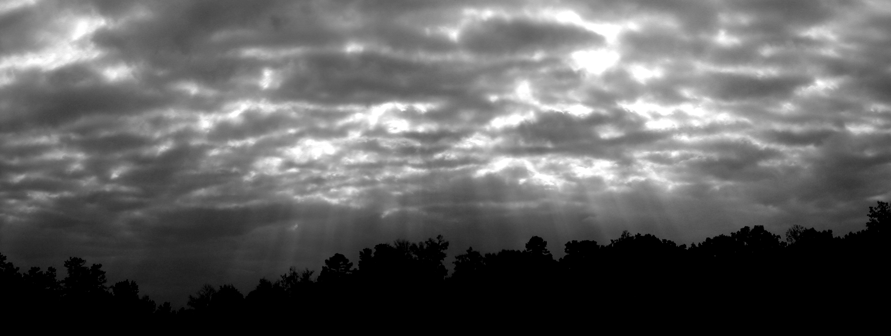

God Rays (also known as Crepuscular rays) are rays of sunlight that appear through the atmosphere. They appear radiating through clouds in the early morning and late evening. However, they also can appear in interior settings when sunlight streams through a small opening in the form. The appearance of the light as is passes through space can can a strong phenomenological effect. The image above shows the Pantheon, a classical Roman structure, that was designed with a small oculus at the top create this powerful and awe inspiring effect.
The ability to render the god ray in a realistic and compelling way requires a carefully crafted 3d model and the ability to render the attenuation and scattering of light as is passes through a medium. For exploring this effect in an interior context, a 3d model of an interior scene with small openings to an external bright light source provides an ideal setup. However the majority of the problem lies in the ability to render the light as it passes through a medium. Volumetric rendering is a very computationally expensive task and can take a lot of time for the image to converge.
Our proposal for this project is to implement volumetric rendering on the GPU. With the parallel processing power of modern Nvidia GPUs and the CUDA/Optix API, we believe that we can achieve much faster rendering times for volumetric rendering compared with conventional CPU rendering. This project presents several challenges as an extension of the pathtracer (project 3) for the course. First, we must be able to translate our knowledge of the pathtracing algorithms into a program that can do the bulk of the work on the GPU. Second, we must be able to implement the algorithms for volumetric rendering and the attenuation and scattering of light in a medium within this new context. To simplify this problem to focus on volumetric rendering on the GPU, our goal will not be to focus on implementing a suite of BSDFs for the geometry in the scene or advanced camera lens models. As such, by considering the god ray in a scene similar to image of the pantheon above, we feel that we can generate compelling and interesting renderings quickly.
Our first primary goal is to create a program capable of raytracing volumetric effects on the GPU. Since both of us have Nvidia GPUs, this program will be developed with the Nvidia Optix API which makes use of the CUDA parallel programming platform. Since a major part of our proposal is for fast rendering, the raytraced view of the scene will best be displayed through the program window. There are several requirements our program outlined below:
Our second primary goal for the project is to implement volumetric rendering. In order to render god rays in our scene, we will initially consider Homogeneous mediums. A large component of this goal will require us to research methods for implementing this technique but can initially be broken down into an attenuation component and a scattering component. It will be imperative that we consider the implementation of this goal with respect to GPU and therefore many unforseen challenges may arise. The following image shows volumetric rendering of a simple model with a single light source.
The primary motivation for looking into raytracing options on the GPU is for performance. By performance, we mean the time it takes to raytrace a scene including participating mediums with low noise. To demo our program, we would like to show the render operating in an interactive manner; for example: by updating the camera, changing the sun position or medium parameters. Given that we will be using a progressive rendering mode, we expect there to be potentially more than 1000 passes on even a simple model before the image begins to converge. For a more analytical analysis, we would like to be able to control and compare the the number of passes (sampling rate) and the rendering times. While we are not developing an identical program on the CPU, many commercially available CPU rendering packages have volumetric rendering included and so comparing rendering times (controlled for sampling rate) across the CPU and GPU will be important, albeit approximate.
Our proposal thus far has considered the rendering of god rays within the context of interior scenes. However, it would be interesting to consider the capacity for our program to render exterior scenes with clouds. This stretch goal would require us to implement two more features: HDRi lighting to represent the skylight, and combinations of homogeneous and non-homogeneous mediums in the scene. Non-homogeneous mediums would be necessary for clouds. The following image shows a scene that may be attempted with such additions.
For the first week we will be setting up our build environment, collecting neccesarry research for implementing volumetric rendering, developing a set of model files for use in the program, and familurizing ourselves with the Optix SDK.
For week two, our plan is to implement the Optix Pathtracer program with the requirements set in goal 1 with the exemption for volumetric rendering.
For week three we will be implementing the first portion of the volumetric rendering problem, attenuation. We will start testing the performance of our program during this week.
For week four we will be implementing the second portion of the volumetric rendering problem, scattering. We will continue testing performance this week, and finish our write up and presentation.
We will be developing our program on Windows in Visual Studio 2015 using the Nvidia CUDA v8.0 toolkit and OptiX SDK. We will be testing our program with the GeForce 1080 and Quadro M4000 GPUs.